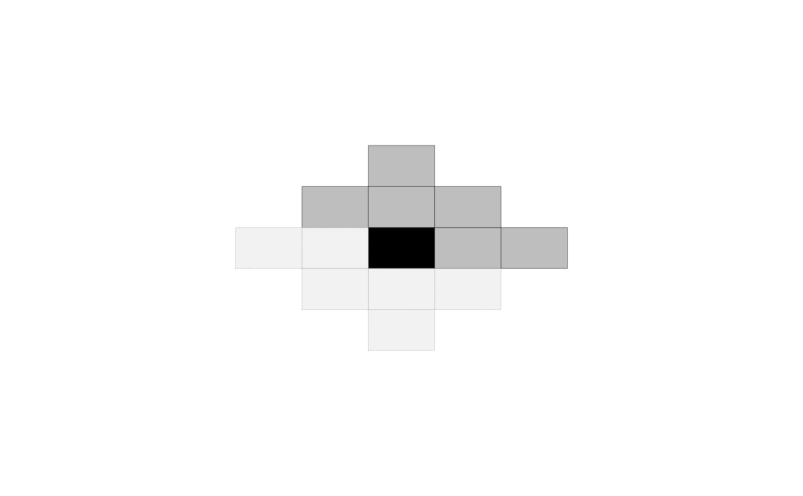
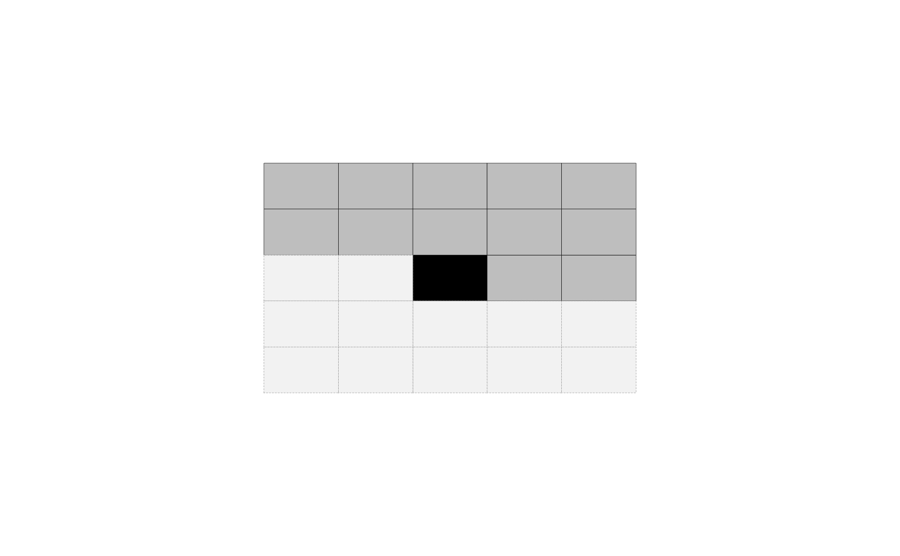

The mrfi S4 class is a representation of the interaction
structure for a spatially-stationary Markov Random Field.
The function mrfi() provides an interface for creation
mrfi objects. A plot method is also available for visualization, as
well as conversion methods like as.list and operators like +.
# S4 method for mrfi as.list(x) # S4 method for mrfi,numeric,missing [[(x, i) # S4 method for mrfi,numeric,missing [(x, i) # S4 method for mrfi,numeric +(e1, e2) # S4 method for mrfi,mrfi +(e1, e2)
| x |
|
|---|---|
| i | vector of indexes to extract interacting positions. |
| e1 | A |
| e2 | Either a second |
as.list(): converts the mrfi object to a list of interacting
positions (length 2 vectors).
[[: converts to list and subsets it.
[: subsets the mrfi object and returns another mrfi object.
+: computes the union of the interaction structure in a mrfi object with
a numeric representing an additional position to include or another mrfi
object.
The interaction structure is defined by the list of relative positions in it. For a specific pixel, conditional to the values of pixels in these relative positions from it, its value is independent of any other pixel in the image.
The relative positions are indentified by two integers rx and ry
representing the "shift" in the x-axis and y-axis respectively. As an
example: The relative position (1,0) representes the pixel in the immediate
right position, while (-1,0) the left one.
Note that the inclusion of a relative position to the dependence also implies
its opposite direction is not conditionally independent (commutativeness of
dependence), but only one is actually included to the mrfi object.
To illustrate that, a nearest neighbor dependence structure can be specified by:
Note that it only includes the positions (1,0) and (0,1), but when
visualizing it, for example, mrf2d understands the opposite directions
are also conditionally dependent, as in
RmatA 2-column matrix where each row represents a relative position
of interaction.
#> [[1]] #> [1] 1 0 #> #> [[2]] #> [1] 0 1 #>#> [[1]] #> [1] 1 0 #>#> [[1]] #> [1] 1 0 #> #> [[2]] #> [1] 2 0 #> #> [[3]] #> [1] -1 1 #>#> 3 interacting positions. #> rx ry #> 1 0 #> 0 1 #> 2 0#> 3 interacting positions. #> rx ry #> 1 0 #> 0 1 #> 2 0